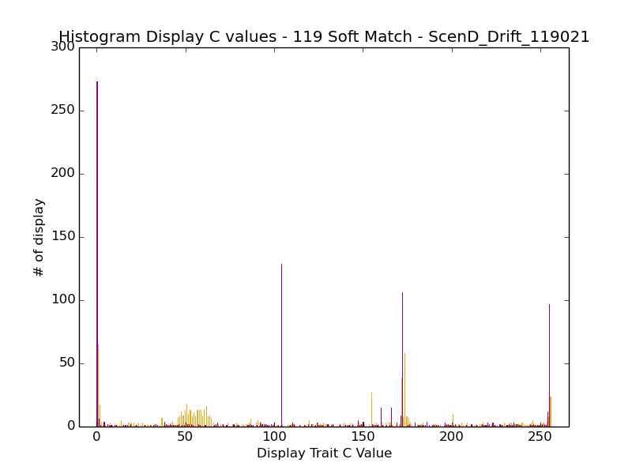

Yay! A new week!
I'm writing a bash script to do my analysis more or less for me. Yay!
Ok, I did a bunch of stuff yesterday, but I didn't write anything down, because I'm dumb.
The script is at ~/mate_discrimination/scripts/11_17_analysis.sh, not under version control yet, because I suck.
I'm going to paste it here, for posterity. :P
#!/bin/bash
me=`basename $0`
if [ $# -lt 2 ]
then
echo "usage ${me} <description> <prefix>"
echo "e.g. % ${me} \"118\" 118"
exit
fi
description=$1
prefix=$2
echo "Description: " $1 ${1}
echo "Prefix: " $2 ${2}
module load matplotlib
matings_timeseries() {
## extract the matings timeseries data
for k in *;
do
if [ -e $k"/"*_step3/mates ];
then
echo $k;
cd $k/*_step3/mates/;
pwd;
rm matings_timeseries.dat;
rm total_matings_timeseries.dat;
for i in {0..250};
do
#echo $i;
## over the wall matings
awk -v i="$i" '{ \
if (\
($13 == 1) && \
(\
($11 > 1799 && $24 < 1800) || \
($11 < 1800 && $24 > 1799)\
)\
) \
print $2,$3,$4,$5,$8,$11,"--->",$15,$16,$17, $18,$21,$24}' mates-${i}.dat* | wc -l >> matings_timeseries.dat ;
## total matings
awk -v i="$i" '{ \
if ($13 == 1) \
print $2,$3,$4,$5,$8,$11,"--->",$15,$16,$17, $18,$21,$24}' mates-${i}.dat* | wc -l >> total_matings_timeseries.dat ;
done;
cd ../../../;
fi ;
done
}
plot_matings_timeseries() {
## plot
python ../../../research_scripts/quickplot.py --error --end_at 100 -x Updates -y Matings -t "Post-Allopatry Hybridizing Matings Gen 1 - ${description} Sexual Selection After Allopatry" ${prefix}_hybridizing_matings_100u_postallopatry_ss_gen1 \
matings_timeseries.dat 1 "Ctrl_*/*_step3/mates/" Control \
matings_timeseries.dat 1 "ScenD_*/*_step3/mates/" ScenarioD \
matings_timeseries.dat 1 "ScenA_*/*_step3/mates/" ScenarioA \
matings_timeseries.dat 1 "ScenB_*/*_step3/mates/" ScenarioB \
matings_timeseries.dat 1 "ScenC_*/*_step3/mates/" ScenarioC \
matings_timeseries.dat 1 "ScenE_*/*_step3/mates/" ScenarioE
python ../../../research_scripts/quickplot.py --error --end_at 100 -x Updates -y Matings -t "Post-Allopatry Total Matings Gen 1 - ${description} Sexual Selection After Allopatry" ${prefix}_total_matings_100u_postallopatry_ss_gen1 \
total_matings_timeseries.dat 1 "Ctrl_*/*_step3/mates/" Control \
total_matings_timeseries.dat 1 "ScenD_*/*_step3/mates/" ScenarioD \
total_matings_timeseries.dat 1 "ScenA_*/*_step3/mates/" ScenarioA \
total_matings_timeseries.dat 1 "ScenB_*/*_step3/mates/" ScenarioB \
total_matings_timeseries.dat 1 "ScenC_*/*_step3/mates/" ScenarioC \
total_matings_timeseries.dat 1 "ScenE_*/*_step3/mates/" ScenarioE
python ../../../research_scripts/quickplot.py --error --end_at 100 -x Updates -y Matings -t "Post-Allopatry Total Matings Gen 1 - ${description} Sexual Selection After Allopatry" ${prefix}_matings_ratio_100u_postallopatry_ss_gen1 \
matings_ratio_timeseries.dat 1 "Ctrl_*/*_step3/mates/" Control \
matings_ratio_timeseries.dat 1 "ScenD_*/*_step3/mates/" ScenarioD \
matings_ratio_timeseries.dat 1 "ScenA_*/*_step3/mates/" ScenarioA \
matings_ratio_timeseries.dat 1 "ScenB_*/*_step3/mates/" ScenarioB \
matings_ratio_timeseries.dat 1 "ScenC_*/*_step3/mates/" ScenarioC \
matings_ratio_timeseries.dat 1 "ScenE_*/*_step3/mates/" ScenarioE
}
summed_matings() {
## convert to a summed column
for k in *;
do
if [ -e $k"/"*_step3/mates ];
then
echo $k;
cd $k/*_step3/mates/;
pwd;
python ~/research_scripts/common/aggregate_file.py --sum matings_timeseries.dat > sum_matings_gen1.dat ;
python ~/research_scripts/common/aggregate_file.py --sum total_matings_timeseries.dat > sum_total_matings_gen1.dat ;
cd ../../../;
fi ;
done
roots=( Ctrl ScenA ScenB ScenC ScenD ScenE )
for root in ${roots[@]}
do
rm $root"_"sum_matings_gen1.dat;
rm $root"_"sum_total_matings_gen1.dat;
for k in $root"_"*;
do
if [ -e $k"/"*_step3/mates ];
then
echo $k;
cd $k/*_step3/mates/;
pwd;
cat sum_matings_gen1.dat >> ../../../$root"_"sum_matings_gen1.dat ;
cat sum_total_matings_gen1.dat >> ../../../$root"_"sum_total_matings_gen1.dat ;
cd ../../../;
fi ;
done
rm ${root}_sum_matings_ratio_gen1.dat
while IFS=$'\t' read -r f1 f2;
do
if [ $f2 != 0 ]
then
echo "${f1}/${f2}" | bc -l >> ${root}_sum_matings_ratio_gen1.dat
else
echo "0" >> ${root}_sum_matings_ratio_gen1.dat
fi
done < <(paste ${root}_sum_matings_gen1.dat ${root}_sum_total_matings_gen1.dat)
done
}
plot_summed_matings() {
## and plot
python ~/research_scripts/graph_generation/bar_chart_from_csv.py -x Treatment -y "Total Hybridizing Matings in Gen 1" -t "Total Initial Matings - ${description}" --xticks="Control-Sympatry,Drift,A - L9->L7,B - L9->L9+3in,C - L5->L7,E - BL4->L9" --error ${prefix}_sum_matings_gen1.png \
Ctrl_sum_matings_gen1.dat \
ScenD_sum_matings_gen1.dat \
ScenA_sum_matings_gen1.dat \
ScenB_sum_matings_gen1.dat \
ScenC_sum_matings_gen1.dat \
ScenE_sum_matings_gen1.dat
python ~/research_scripts/graph_generation/bar_chart_from_csv.py -x Treatment -y "Ratio of Hybridizing vs Total Matings in Gen 1" -t "Ratio Initial Hybridizing Matings - ${description}" --xticks="Control-Sympatry,Drift,A - L9->L7,B - L9->L9+3in,C - L5->L7,E - BL4->L9" --error ${prefix}_ratio_sum_matings_gen1.png \
Ctrl_sum_matings_ratio_gen1.dat \
ScenD_sum_matings_ratio_gen1.dat \
ScenA_sum_matings_ratio_gen1.dat \
ScenB_sum_matings_ratio_gen1.dat \
ScenC_sum_matings_ratio_gen1.dat \
ScenE_sum_matings_ratio_gen1.dat
}
plot_display_preference() {
## plot out the display preference C data
python ~/research_scripts/quickplot.py -x Updates --error --xtick_multiplier=100 -y "Females Using Display C" -t "Female Display C Preference Data - ${description}" ${prefix}_female_preference_data \
female_mate_preference_data.dat 11 "Ctrl_*/*_step3/" "Control" \
female_mate_preference_data.dat 11 "ScenD_*/*_step3/" "ScenD" \
female_mate_preference_data.dat 11 "ScenA_*/*_step3/" "ScenA" \
female_mate_preference_data.dat 11 "ScenB_*/*_step3/" "ScenB" \
female_mate_preference_data.dat 11 "ScenC_*/*_step3/" "ScenC" \
female_mate_preference_data.dat 11 "ScenE_*/*_step3/" "ScenE"
}
extract_post_zygotic() {
for k in *;
do
if [ -e $k"/"*_step3/ ];
then
echo $k;
cd $k/*_step3/;
for i in {25..1};
do
cat detail-$i"0".spop* | tail -n +26 >> detail-total.spop;
done;
sort -u -k1,1 detail-total.spop > detail-uniq.spop;
rm gen1_total.dat;
for i in {1..25};
do
awk -v i="$i" '{if ($11 == 1) print "parents:",$4,"merit,gest,fit:",$8,$9,$10,"-- generation,update:",$11,$12}' detail-$i"0".spop* | wc -l >> gen1_total.dat;
done;
rm gen1_meritnonzero.dat;
for i in {1..25};
do
awk -v i="$i" '{if ($11 == 1 && $8 == 0) print "parents:",$4,"merit,gest,fit:",$8,$9,$10,"-- generation,update:",$11,$12}' detail-$i"0".spop* | wc -l >> gen1_meritnonzero.dat;
done;
rm gen1_meritnonzero_overthewall.dat;
for i in {1..25};
do
awk -v i="$i" '{split($4, array, /,/); if ($11 == 1 && $8 > 0 && ((array[1] > 1799 && array[2] < 1800) || (array[1] < 1800 && array[2] > 1799))) print "parents:",$4,"merit,gest,fit:",$8,$9,$10,"-- generation,update:",$11,$12}' detail-$i"0".spop* | wc -l >> gen1_meritnonzero_overthewall.dat ;
done;
rm gen1_overthewall.dat;
for i in {1..25};
do
awk -v i="$i" '{split($4, array, /,/); if ($11 == 1 && ((array[1] > 1799 && array[2] < 1800) || (array[1] < 1800 && array[2] > 1799)) ) print "parents:",$4,"merit,gest,fit:",$8,$9,$10,"-- generation,update:",$11,$12}' detail-$i"0".spop* | wc -l >> gen1_overthewall.dat ;
done;
rm gen1_live_nonhybrid.dat;
for i in {1..25};
do
awk -v i="$i" '{split($4, array, /,/); if ($11 == 1 && $8 > 0 && ((array[1] < 1800 && array[2] < 1800) || (array[1] > 1799 && array[2] > 1799)) ) print "parents:",$4,"merit,gest,fit:",$8,$9,$10,"-- generation,update:",$11,$12}' detail-$i"0".spop* | wc -l >> gen1_live_nonhybrid.dat ;
done;
rm gen1_nonhybrid.dat;
for i in {1..25};
do awk -v i="$i" '{split($4, array, /,/); if ($11 == 1 && ((array[1] < 1800 && array[2] < 1800) || (array[1] > 1799 && array[2] > 1799)) ) print "parents:",$4,"merit,gest,fit:",$8,$9,$10,"-- generation,update:",$11,$12}' detail-$i"0".spop* | wc -l >> gen1_nonhybrid.dat ;
done;
rm updates.dat;
for i in {1..25} ;
do
echo $i"0" >> updates.dat;
done;
echo "#update gen1_total, gen1_merit>0, gen1_merit>0_OTW, gen1_OTW, gen1_Live_NonHybrid, gen1_nonHybrid" > offspring.dat; paste updates.dat gen1_total.dat gen1_meritnonzero.dat gen1_meritnonzero_overthewall.dat gen1_overthewall.dat gen1_live_nonhybrid.dat gen1_nonhybrid.dat >> offspring.dat;
awk '{$1=$1}1' OFS=" " offspring.dat > offspring.cleaned.dat;
cd ../../;
fi ;
done;
for k in *;
do
if [ -e $k"/"*_step3 ];
then
echo $k;
cd $k/*_step3/;
pwd;
python ~/research_scripts/common/aggregate_file.py --header --sum offspring.cleaned.dat > sum_offspring.cleaned.dat ;
cd ../..;
fi ;
done
target="sum_offspring.cleaned.dat";
roots=( Ctrl ScenA ScenB ScenC ScenD ScenE )
for root in ${roots[@]}
do
for k in $root"_"*;
do
if [ -e $k"/"*_step3 ];
then
echo $k;
cd $k/*_step3/;
pwd;
cat $target >> ../../$root"_"$target ;
cd ../../;
fi ;
done;
done
roots=( Ctrl ScenA ScenB ScenC ScenD ScenE )
for root in ${roots[@]}
do
echo $root
rm ${root}_sum_offspring_ratio_gen1.dat
while IFS=$',' read -r f1 f2 f3 f4 f5 f6;
do
if [ $f2 != 0 ]
then
#echo "${f4}/${f3}"
#echo "${f4}/${f3}" | bc -l
echo "${f4}/${f3}" | bc -l >> ${root}_sum_offspring_ratio_gen1.dat
else
echo "0" >> ${root}_sum_offspring_ratio_gen1.dat
fi
done <${root}_sum_offspring.cleaned.dat
done
}
plot_post_zygotic() {
python ~/research_scripts/graph_generation/bar_chart_from_csv.py \
-x Treatment -y "Offspring of Gen 1" -t "Initial Offspring - ${description}" --pair --groups=6 \
--xticks="Sympatry,Drift,A,B,C,E" --legend="Total,Hybrid,Non-Hybrid,Live,LiveHybrid,Live-NonHybrid" \
--columns="2,5,7,3,4,6" --error \
${prefix}_sum_offspring_gen1.png \
Ctrl_sum_offspring.cleaned.dat \
ScenD_sum_offspring.cleaned.dat \
ScenA_sum_offspring.cleaned.dat \
ScenB_sum_offspring.cleaned.dat \
ScenC_sum_offspring.cleaned.dat \
ScenE_sum_offspring.cleaned.dat
python ~/research_scripts/graph_generation/bar_chart_from_csv.py \
-x Treatment -y "Ratio of Live Hybrid Offspring vs Total Live Offspring of Gen 1" -t "Initial Offspring Ratio Live Hybrid vs Total Live - ${description}" --pair --groups=6 \
--xticks="Sympatry,Drift,A,B,C,E" --legend="LiveHybrid/TotalLive" \
--columns="1" --error \
${prefix}_sum_ratio_hybridlive_vs_live_gen1.png \
Ctrl_sum_offspring_ratio_gen1.dat \
ScenD_sum_offspring_ratio_gen1.dat \
ScenA_sum_offspring_ratio_gen1.dat \
ScenB_sum_offspring_ratio_gen1.dat \
ScenC_sum_offspring_ratio_gen1.dat \
ScenE_sum_offspring_ratio_gen1.dat
}
extract_displayc_histogram() {
for k in *;
do
if [ -e $k"/"*_step2a/mating_display_c_histogram-300000.dat ];
then
if [ -e $k"/"*_step2b/mating_display_c_histogram-300000.dat ];
then
echo $k;
cd $k/*_step2a/;
tail -1 mating_display_c_histogram-300000.dat | cut -d " " -f 6- > choosy_female_2a-300000.dat
cd ../../;
cd $k/*_step2b/;
tail -1 mating_display_c_histogram-300000.dat | cut -d " " -f 6- > choosy_female_2b-300000.dat
cd ../../;
fi
fi
done
}
plot_displayc_histogram() {
for k in *;
do
if [ -e $k"/"*_step2a/choosy_female_2a-300000.dat ];
then
if [ -e $k"/"*_step2b/choosy_female_2b-300000.dat ];
then
echo $k;
cd $k;
python ~/research_scripts/graph_generation/histogram_from_csv.py -t "Histogram Display C values - ${description} - $k" -x "Display Trait C Value" -y "# of display" -s " " --xlim_min -10 --xlim_max=266 ${prefix}_${k}_displayc_histograms.png *_step2a/choosy_female_2a-300000.dat *_step2b/choosy_female_2b-300000.dat
cd ../
fi
fi
done
}
#matings_timeseries;
#summed_matings;
#extract_post_zygotic;
#plot_post_zygotic;
#plot_summed_matings;
#plot_display_preference;
extract_displayc_histogram;
plot_displayc_histogram;
So, this is the better setup (Run 118), with Hard Match


Ok, notes from lab meeting.
Post-zygotic graph fixes
Forced Matings!
- mate regardless of choice within group (for the baseline), and between group
Oh, it occurred to me that one way to remove the effect of the basins of attraction at 0 and -1 (255), for a given run, randomly assign an origin value. But, how do I make that stick when they get put in a shared environment?
I generated some more graphs.
And I've been trying to suss out what each of these things means.
Live Hybrid/Total Live
In the control (sympatry), of all the live organisms, about 33% are "hybrids". Whereas, in the allopatry treatments, only between between 22-15% of the live offspring are hybrids. I think this is a pretty solid set of evidence for lesser representation. However, you can't distinguish between the effect of pre-zygotic isolation (resulting is just fewer hybrid offspring in general), and post-zygotic, which means that fewer of the hybrids live.
So, I put together a set of graphs that compare the ratios of living to dead hybrids. The first graph, with absolute counts, makes it hard to see the difference between pre and post zyg.
But the second... well fuck.

Essentially, there doesn't seem to be much variation between the treatments. Yes, there are fewer hybrids overall, but they have the same chance of being live as the control, which is bad news.
Also, it's mildly surprising. What's the ratio over the whole population, not just hybrids?
So, one factor whose effect I just don't know is that I'm not capturing every offspring. I'm only capturing a snapshot of the population every ten updates. So, it's possible that I'm missing quite a few offspring that get squished. But, what's the chance of that? I look at the counts, and there should be twice as many offspring per mating event. In control, there were just under 500 hybrid mating events, so there should be almost 1000 offspring, but I'm only counting about 700 hybrid offspring. So, per my raw counts, there should be almost 50% more offspring counted.
So, obviously, my data-gathering technique for the post-zygotic is super suspect, and may, possibly, be biasing the number of dead offspring downward. Harrumph. It's also possible that, because they're so heavily pounded by recombination, that they're super modular and robust, so they don't neccesarily die. But, do they have lower fitness? Dunno!
So, I'm going to do the forced mating assay (via the SPECIES command in analyze mode) and see if I can get something better going.
Spent much of yesterday and today on getting analyze mode working with what I want to do. I settled on the RECOMBINE command, which I then use with DETAIL_AVERAGE to pull out appropriate data. I had to make a bunch of code changes and fixes to get things working, but I now have a working pipeline, which I will incorporate into future runs. For now, I'm using the following analysis script:
## Copy the files out so I can load them agnostically :/ SYSTEM cp data*step2a/detail-300000.spop ./detail-300000.spop.2a SYSTEM cp data*step2b/detail-300000.spop ./detail-300000.spop.2b ## The stats for the whole batches SET_BATCH 0 PURGE_BATCH NAME_BATCH BatchA load detail-300000.spop.2a RECALCULATE DETAIL_AVERAGE detail_avg.dat viable fitness gest_time total_task_count tasks_done mating_display_c mating_type SET_BATCH 1 PURGE_BATCH NAME_BATCH BatchB load detail-300000.spop.2b RECALCULATE DETAIL_AVERAGE detail_avg.dat viable fitness gest_time total_task_count tasks_done mating_display_c mating_type ## regular sampled recombination SET_BATCH 0 NAME_BATCH BatchA_Sampled SAMPLE_ORGANISMS 0.06 DETAIL_AVERAGE detail_avg.dat viable fitness gest_time total_task_count tasks_done mating_display_c mating_type SET_BATCH 1 NAME_BATCH BatchB_Sampled SAMPLE_ORGANISMS 0.06 DETAIL_AVERAGE detail_avg.dat viable fitness gest_time total_task_count tasks_done mating_display_c mating_type SET_BATCH 2 PURGE_BATCH NAME_BATCH Recombination_ RECOMBINE 0 1 2 10 RECALCULATE DETAIL_AVERAGE detail_avg.dat viable fitness gest_time total_task_count tasks_done mating_display_c mating_type ## Recombining only with viable organisms SET_BATCH 0 PURGE_BATCH NAME_BATCH BatchA_Sampled_Viable load detail-300000.spop.2a RECALCULATE SAMPLE_ORGANISMS 0.06 1 DETAIL_AVERAGE detail_avg.dat viable fitness gest_time total_task_count tasks_done mating_display_c mating_type SET_BATCH 1 PURGE_BATCH NAME_BATCH BatchB_Sampled_Viable load detail-300000.spop.2b RECALCULATE SAMPLE_ORGANISMS 0.06 1 DETAIL_AVERAGE detail_avg.dat viable fitness gest_time total_task_count tasks_done mating_display_c mating_type SET_BATCH 2 PURGE_BATCH RECOMBINE 0 1 2 10 NAME_BATCH Recombination__Viable RECALCULATE DETAIL_AVERAGE detail_avg.dat viable fitness gest_time total_task_count tasks_done mating_display_c mating_type SYSTEM rm ./detail-300000.spop.2a SYSTEM rm ./detail-300000.spop.2b
And the following bash script to run it on the runs output, which is stored as ~/mate_discrimination/scripts/analyze_mode_script.sh on the HPCC
#!/bin/bash
me=`basename $0`
if [ $# -lt 2 ]
then
echo "usage ${me} <startseed> <endseed>"
echo "e.g. % ${me} \"118001\" 118030"
exit
fi
startseed=$1
endseed=$2
echo "startseed: " $1 ${1}
echo "endseed: " $2 ${2}
for (( seed=$startseed; seed<=$endseed; seed++ ))
do
pwd
cd Ctrl_${seed}
../avida -a -s $seed -set ANALYZE_FILE ../analyze_ctrl.cfg -set EVENT_FILE events_I.cfg -set ENVIRONMENT_FILE environment_I_*.cfg -set DATA_DIR data__Ctrl_analyze
cd ../
done
for (( seed=$startseed; seed<=$endseed; seed++ ))
do
pwd
cd ScenD_Drift_${seed}
../avida -a -s $seed -set ANALYZE_FILE ../analyze_allo.cfg -set EVENT_FILE events_I.cfg -set ENVIRONMENT_FILE environment_I_*.cfg -set DATA_DIR data__D_analyze
cd ../
done
for (( seed=$startseed; seed<=$endseed; seed++ ))
do
pwd
cd ScenA_${seed}
../avida -a -s $seed -set ANALYZE_FILE ../analyze_allo.cfg -set EVENT_FILE events_I.cfg -set ENVIRONMENT_FILE environment_I_*.cfg -set DATA_DIR data__A_analyze
cd ../
done
for (( seed=$startseed; seed<=$endseed; seed++ ))
do
pwd
cd ScenB_${seed}
../avida -a -s $seed -set ANALYZE_FILE ../analyze_allo.cfg -set EVENT_FILE events_I.cfg -set ENVIRONMENT_FILE environment_I_*.cfg -set DATA_DIR data__B_analyze
cd ../
done
for (( seed=$startseed; seed<=$endseed; seed++ ))
do
pwd
cd ScenC_${seed}
../avida -a -s $seed -set ANALYZE_FILE ../analyze_allo.cfg -set EVENT_FILE events_I.cfg -set ENVIRONMENT_FILE environment_V_*.cfg -set DATA_DIR data__C_analyze
cd ../
done
for (( seed=$startseed; seed<=$endseed; seed++ ))
do
pwd
cd ScenE_${seed}
../avida -a -s $seed -set ANALYZE_FILE ../analyze_allo.cfg -set EVENT_FILE events_I.cfg -set ENVIRONMENT_FILE environment_VI_*.cfg -set DATA_DIR data__E_analyze
cd ../
done
Not really sure yet how to interpret the output. The numbers aren't exactly super dramatic. :/
My analysis script completed for 118b, but not for 119, so I'm re-running it. Hope it makes it through this time.
Next is to plot:
Think about how the viability is predicted by the viability of the source bodies. You would expect a certain baseline recombinant viability from organisms sampled from the same population. Maybe we want to control for the baseline viability by recombining from A-A and B-B, and then see what the difference is when you sample A-B. The control is just... an unrelated way to do this maybe? With a larger population? I feel like some advanced statistical math may be required here. :/ I may have to look at some literature. :/
Maybe for the above, look at the average recombination viability is within each population, and the average recombination viability when you combine the populations. The N of the latter will be half of the former, but... shrug? Plot bars against each other, and see how they track, or just see if there is a predictable difference. Look at all the samples A and B, and look at the correlation? R^2? Re-read the correlation thing. Divide it based on the treatments.
RV - recombinant viability
RV(A) - recombinant viability of A-A; RV(B) - recombinant viability of B-B
RV(ab) - recombinant viability of A-B
Look at correlation (R^2) of RV(A)&RV(B) vs RV(ab)?
Also, plot point-cloud for the samples? Plot average bar for RV(A)&RV(B) with error bars. Plot average bar for RV(ab) with error bars.
Do this divided by treatment, and divided by pre-selected for viable, and NOT pre-selected for viable.
----- BUNNY TRAIL ------
Measure rate of mating WITHIN each population!!! Duh.
I'm regenerating the data per above.
Next step, when the re-gen finishes (hopefully tmorrow am):